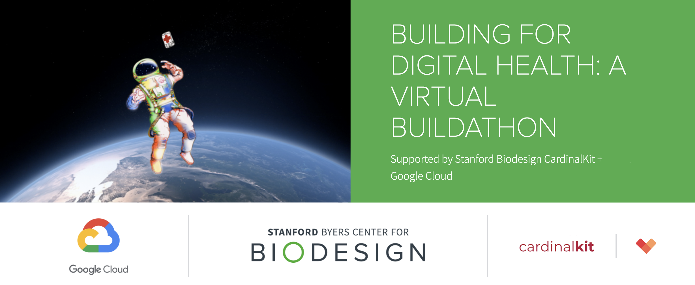

Stanford Biodesign CardinalKit Buildathon 2021
Join us virtually over two weeks to pitch and build your next digital health solution using Stanford's open-source CardinalKit framework! Sign up here!

Stanford Biodesign is hosting its 2nd Annual Virtual Digital Health CardinalKit Buildathon from September 25 through October 10th! Form your team then address one of the many needs in healthcare by building your solution using CardinalKit as a framework.
If you have an idea in mind, this is the perfect opportunity to kickstart it with help from our team. Don't have an idea yet? No problem! Come by to learn more about building for digital health at our workshops and meet other members of our community!
Day 1: Saturday, September 25th, 9am - 12pm PST
Welcome, Digital Health Keynote, CardinalKit Overview, and Team Building
Day 2: Saturday, October 2nd, 9am - 12pm PST
Pitch your Need Area & Concept
Day 3: Saturday, October 10th, 9am - 12pm PST
Final Presentations and Award Ceremony